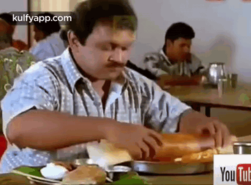

How to make Onion Dosa

What is Onion Dosa?
Onion dosa is the premier south Indian dish. Every single household in Tamil Nadu will never get
bored of this wonderful dish. I kid you not, we eat this almost everyday with slight variations.
The variations include plain dosa, ghee dosa, podi dosa, uthappam, you get the idea. The reason
for success of this dish is simple. It is versatile, one can eat it any time of the day. Two, it is
easy to make once the initial preparations are complete. Three, it has a wide variety of side dishes.
Let's get straight into making this bad boy.

Ingredients
- Dosa Batter
In order to make dosa batter grind these in a grinder:
- Chutney(optional)
To make chutney get the following ingredients:
Algorithm
To obtain the best onion dosa, follow these steps diligently
- Grind the batter ingredients in a grinder by frequently adding water.
- After the batter has reached a semi-solid state, store it in a refrigerator.
- The batter will be usable after 1-2 days.
- After two days, dosa can be prepared. Get your dosa pan a.k.a a tawa and spread the batter
on it in a circular fashion. Use low flame and wait for the batter to solidify.
- After a minute or two, the dosa must be solid and soft. That's your cue to get it off the tawa.
- With that your first dosa is ready. You can store the batter for more than a week.
- Get the batter and make dosas whenever you feel like eating em.
Steps to make chutney
- Chutney comes in various flavours like dosa. They preparation method only varies slightly.
- To make coconut chutney, cut some pieces of coconut and grind them in a mixer.
- Add chillies and water or oil.
- That's all! your coconut chutney is ready.
- You can make tomato chutney, mint chutney and a lot more. Creativity is your only limit.
Click here to go back
Click here to go to the top